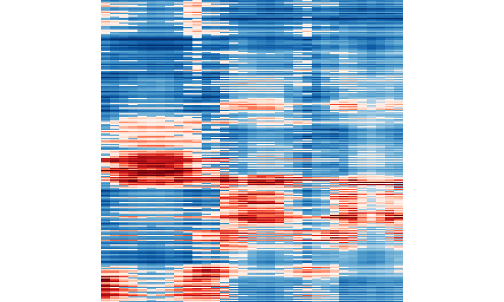
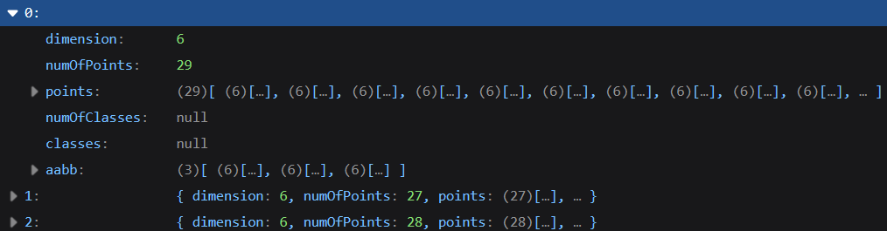
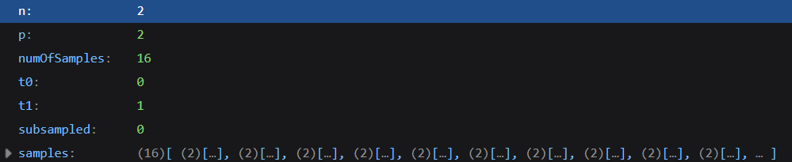
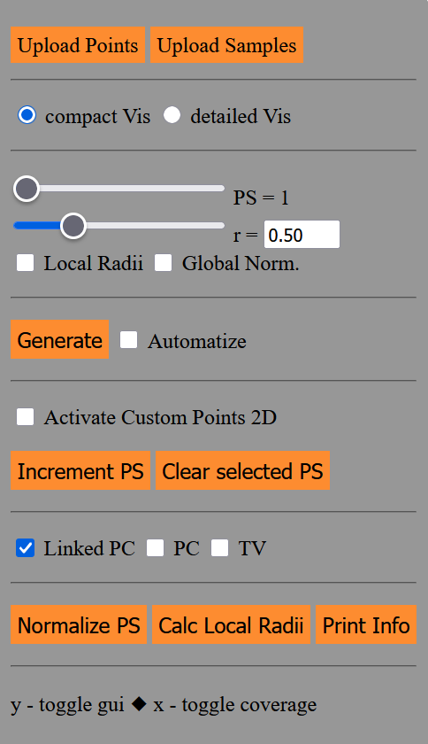

Hilbert Signatures
The demo represents the implementation of the Hilbert signatures visualization for the compact and comparative representation and exploration of high-dimensional data sets. A Hilbert signature represents a sequence of density measurements taken along a Hilbert curve aligned with the data. Applied to multiple data sets and aligned side-by-side allows comparison of the data sets, which are related via a common Hilbert curve.
In the following we provide the three data sets: Cars, Walmart, and Nutrient
which can be directly used in this demo.
Each entry consists of a normalized version in the demo-required format already split by some value
indicated in brackets, an info-file, a Hilbert curve sample file created in
dimension n, iteration p, and consisting of s samples, and the original, obtained data file.
- Cars (by year) • Info • HC (n6, p3, s256) • Cars (original)
- Walmart (by month) • Info • HC (n5, p3, s256) • Walmart (original)
- Nutrient (by group) • Info • HC (n14, p1, s256) • Nutrient (original)
A data file, which is uploaded via Upload Points, need to carry the format shown in the upcoming image, i.e., it is a json file consisting of an array holding objects. Each object represents one point set (cf. upcoming image in which the first object is expanded) providing information about its dimension, the number of points (numOfPoints), an array consisting of arrays (each of length equal to the dimension) containing the normalized points, the number of classes (numOfClasses), and an array holding a classification index for each point. The latter two can be null if this information is not available or needed. The last entry refers to the axis-aligned bounding box (aabb) as an array holding the minimum, maximium, and distance between both. This was used to normalize the data. Note that every point set got normalized with respect to the bounding box of all the point sets' bounding boxes to keep them comparable with each other.

A samples file, which is uploaded via Upload Samples, need to carry the format shown in the following image, i.e., it is a json file consisting of one object holding the dimension n and iteration p of the Hilbert curve. Additionally, it stores the number of samples (numOfSamples), the interval bounds t0, t1 from [0,1] with t0 < t1, an info whether the curve got subsampled (0 - false, 1 - true), and an array of arrays (each of length equal to dimension n) containing the normalized samples (points). Such samples file can be generated using this python script, which requires to prescribe the parameters n (HC dimension), p (HC iteration), t0 (lower bound), t1 (upper bound), subsampling, and targetNumOfSamples. In the following we provide some 2-dimensional sample files, which can be used with the Activate Custom Points 2D functionality.

The demo runs as web-application. After launch the settings can be toggled using y on the keyboard and they look like:

For a first run, we can upload a data file via Upload Points and a samples file via Upload Samples (dimensions of data and samples need to agree), and apply Generate. Further functionality is described in the following list:
- The Upload Points button allows to load data files described above.
- The Upload Samples button allows to load samples files described above.
- The compact Vis and detailed Vis radio buttons provide to switch between the compact and detailed visualiazations, respectively.
- The PS slider allows to show the detailed visualization (detailed Vis) for the selected point set. When the linked PC is active, it also shows the parallel coordinates of the respective point set.
- The slider r controls the radius used for the spherical neighborhood used in the density measure. It is bound by 0 from below and the square root of the dimension from above.
- Checkbox Covering Radii determines a radius for each point set individually using the bisection method until every data point in the respective point set is covered at least once by the sperhical neighborhoods. Checkbox Global Norm. uses the extrema found among the density measurements of all point sets for normalization. If this is not active, then each point set provides their own normalization extrema. Note, it is extrema, because the density measure determines either the number of neighbors (positive), or if this is empty, the minimal distance to the nearest neighbor (negative).
- The Generate button evaluates the density measure for each sample and for all point sets (compact Vis) or the currently selected point set (detailed Vis) and draws the respective visualizations. It also updates the linked PC plot, if this is activated. The Automatize checkbox automatically calls Generate.
- The Activate Custom Points 2D toggles the possibiliy to manually place points in a 2-dimensional point set. When active it shows a Hilbert curve, whose iteration can be changed by uploading a 2-dimensional samples file. The increment PS button allows to add another point set and the Clear selected PS removes the points already present in the currently selected point set (determined by the PS slider).
- The checkbox Linked PC shows the parallel coordinates plot for the currently selected point set. The checkboxes PC and TV show an experimental stacking of visualizations using parallel coordinates and tabular visualization of all point sets, respectively.
- The button Normalize PS is a pre-processing method which normalizes a data file (in the format described above) with respect to the axis-aligned bounding abox of the union of data points. The button Calc Covering Radii determines the covering radii for the current data file (which is automatically done when covering radii are to be used and it was not calculated yet for the current data). The button Print Info logs various information about the data to the console.
- The key x toggles the point coverage information for each point set ranging from 0 (0%) to 1 (100%).